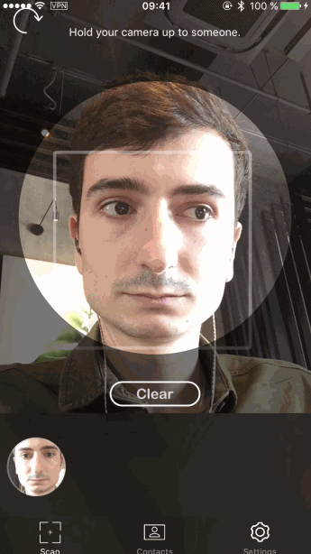

Facemotion it’s an iOS app, allowing you to find easily a contact by face recognition.
Scan the face of a person, whether the contact is in the local storage, it can be detected by the recognition algorithm.
Or add the detected frames to a new contact among your own iOS contacts. And then can be recognise later by the application.
Source: remirobert/Facemotion